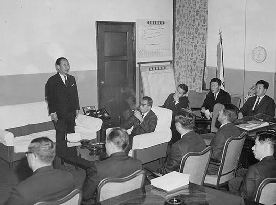
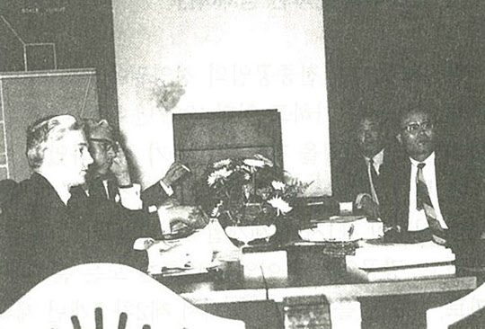
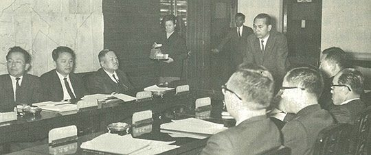
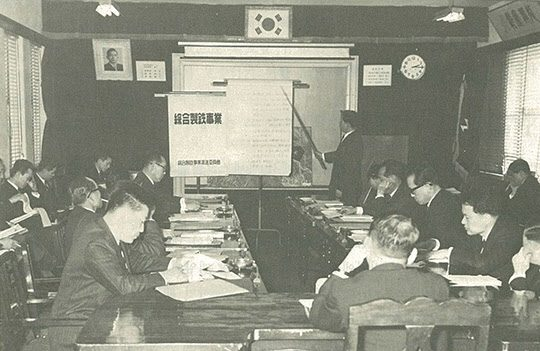

보도일 2014-11-07출처 조선일보 프리미엄조선 연재
박정희는 장기영의 후임으로 상공부장관 박충훈을 경제기획원 부총리에 발탁했다. 박충훈은 그동안 종합제철 건설 프로젝트에도 깊숙이 관여해온 관료였다. 1967년 10월 12일 박충훈의 경제팀(한국정부)이 KISA와 종합제철 건설 기본협정에 서명을 했다. 두 주일을 더 끌었으나 이번에도 ‘KISA가 차관 도입에 대한 책임을 진다’는 내용은 포함되지 않았다. 그들이 손사래를 쳐대니 억지로 명시할 수도 없는 노릇이었다.

그 문제 때문에 장기영도 엔간히 속을 끓이며 답답해했을 것이다. 우리 실무자들이 KISA의 기본계획에 대한 수정과 보완의 브리핑을 여러 차례 반복하자, 그는 이렇게 토로한 적도 있었다.
“차트로 설명만 하고 있을 게 아니라 당장 일을 벌여놔야 한다. 일본이 제철공장을 본궤도에 올려놓기까지 약 60년간 속았다는 사실을 타산지석으로 삼아야 한다. 신중론도 좋지만 속는 게 곧 자산이요 코스트다. 각계의 비판을 받을 수 있지만 때로는 얻어맞을수록 쇠는 더 단단해진다.”
이 토로에는 종합제철 건설을 하루빨리 실현하기 위해 노심초사하는 장기영의 속내가 고스란히 담겨 있다. 종합제철에 대한 대통령의 집념과 의지를 잘 읽을 수 있는 경제부총리로서 얼마나 애를 태우고 있었기에 기자들이 그를 가리켜 ‘종합제철병’에 걸렸다는 평을 했겠는가.
11월 8일, 마침내 박정희가 청와대에서 박태준을 종합제철건설사업추진위원회 위원장에 임명했다. 추진위는 정부관료, 학자, 대한중석 임원 등 12명으로 구성되었다. 학자는 두 명이었다. 포항제철 창립기에 부사장을 맡게 되는 윤동석 서울대학교 공대 교수, 그리고 최형섭 한국과학기술연구원장. 관료는 다섯 명이었다. 정부 부처 간 업무조정을 위해 정문도 경제기획원 차관보를 비롯해 상공부, 재무부, 건설부에서 각각 차관보급이 차출되었으며, 공장부지 매입 및 조성 업무를 주관할 양택식 경북 도지사도 포함되었다.
박정희가 박태준을 종합제철추진위원장에 공식 임명한 것은 어떤 의미였을까? 물론 기본적으로는 종합제철 건설의 대임에 대한 책임이 ‘박정희에 의해 공식적으로 관료들의 어깨에서 박태준의 어깨로 넘어갔다’는 뜻이었는데, 또한 그것은 이제부터 KISA가 ‘KISA의 야박한 장삿속을 의심하는 인물이자 철저한 완벽주의자로서 사심 없는 애국주의자인 박태준’과 본격적이고 전면적으로 상대하게 된다는 중요한 뜻을 담고 있었다.
1965년 5월 박정희가 미국 피츠버그를 방문한 때부터 시작된 일이었지만, 1966년 11월 KISA가 출범한 뒤로만 보아도 꼬박 일 년이 지난 1967년 11월 7일까지 KISA의 한국측 파트너는 박태준이 아니라 한국정부의 경제팀 관료들이었다. 그러니까 그 동안에 박정희가 강력한 의지로 추진해온 종합제철 건설은, 경제팀 관료들이 한국정부 대표로 전면에 나서서 KISA와 교섭하고 박태준은 KISA의 눈에 직접 드러나지 않는 자리에서 박정희를 보좌하는 모양새로 진행되었던 것이다.

‘경제팀 관료들의 종합제철 건설’은 1967년 10월 12일 KISA와 기본협정을 체결하는 것으로 최대 성과를 거두었다. 과연 그 기본협정은 한국 포항에서 실현될 것인가? 11월 8일부터는 KISA와의 교섭 및 협약 대표권이 박태준에게 일임되었다. 물론 경제팀 관료들은 ‘종합제철을 실제로 착공하는 그날까지’ 앞으로도 상당 기간 동안 박정희의 뜻을 받들어 종합제철에 관한 국내외 업무에 대하여 추진위원장을 조력하게 된다.
11월 10일 박태준은 첫 실무회의를 소집했다. 주요 주제의 하나가 종합제철공장 건설에 필요한 인프라 건설 규모에 대한 논의였다. 첫 실무회의부터 설전이 벌어졌다.
첫 논쟁의 대상은 ‘항만시설 규모’였다. 관료는 항만 규모를 일차로 5만 톤급 선박이 접안할 수 있도록 건설하고 나중에 증설이 필요해지면 8만 톤 또는 10만 톤급 규모로 늘려가자고 하고, 위원장은 5만 톤급은 너무 협소하여 제철소 규모 확장에 장애가 되고 경제성도 크게 떨어지니 일차로 10만 톤급 이상으로 하고 앞으로 25만 톤급 규모까지 확장할 수 있도록 건설해야 한다고 했다. 예산 확보의 어려움을 우선시하는 관료는 제철소에 대한 공부가 부족하고 미래에 대한 포부가 작은 반면, 위원장은 그 둘을 겸비하고 있었다.

박태준에게 종합제철추진위원회 첫 실무회의의 결과를 보고받은 박정희는 예산 문제를 직시하고 주저없이 보완 조치를 단행했다. 그것은 관계자들에게 배포한 ‘종합제철건설일반지침’으로, 무엇보다도 위원장에게 원활한 업무 추진을 뒷받침해주려는 것이었다. 그 큰 줄기는 셋이었다.
종합제철소 건설에 실수요자(‘대한중석’을 가리킴)의 부담을 최대한 억제할 것.
실수요자의 부담 한계를 초과한 부족액은 정부가 보전할 것.
국내 철강업의 합리적 육성을 위해 ‘철강공업 육성법’을 제정할 것.
박태준도 스스로 판단하여 한 걸음 더 나아갔다. 추진위의 법적 근거가 미약한 탓으로 법률행위와 금융행위에 장애요소가 많아서 ‘상임위원회’를 구성하고 여기서 실질적으로 일을 관장하게 했다. 그의 앞에는 종합제철소 건설을 위해 당장 덤벼야 할 시급한 문제들이 기다리고 있었다. 큼직한 일들이 적어도 셋이었다.
대한중석 주주들 설득.
KISA의 종합제철 기본계획에 대한 전문적 객관적 상세 검토.
종합제철의 회사 설립 형태 결정.

대한중석에는 민간 주주들이 많았다. 그들은 대한중석의 이익잉여금과 보유자금을 종합제철소 건설 자금으로 사용한다는 정부의 결정에 강력히 반발했다. 대주주인 정부의 일방적 횡포라면서 먼저 주총을 열어 현재 사업항목에 종합제철사업을 추가할 것인가 말 것인가에 대한 가부 의견부터 물어야 한다고 목청을 높였다. 자신의 배당금을 날리고 경영 상태를 다시 악화시킬 수 있는 사안이니까 공공적 이익보다 개인적 이익을 훨씬 더 중시하는 자본주의적 시스템에서 결코 비난할 수 없는 일이었다.
대한중석 사장 박태준은 민간 주주들의 우려와 입장을 충분히 이해하고 있었다. 유일한 방법은 설득이었다. 설득에 성공하려면 실리적 대안 제시와 정서적 접근이 동시에 이뤄져야 했다. 그가 마련한 실리적 대안은 회사 부담을 최소화하기 위해 종합제철사업을 대한중석의 신규 사업으로 추가하지 않고 별개 사업으로 분리하며 종합제철 회사가 설립될 때까지만 대한중석이 종합제철 업무를 대행한다는 것이고, 그가 집어든 정서적 접근은 자본주의적 장부에는 항목이 없는 ‘애국심’에 호소하는 것이었다.
온갖 아우성이 들끓은 대한중석 주주총회를 그래도 ‘사장의 뜻대로’ 무사히 마친 날이었다. 임원들과 가볍게 한잔을 나누고 귀가한 박태준은 아내 앞에서 고개를 절레절레 흔들며 이렇게 토로했다.
“나도 주주라는 걸 한번 해봤으면 좋겠어.”